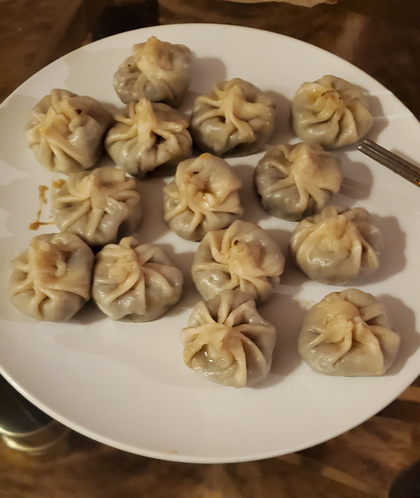

Pork and Veggie Dumplings

Description
Juiciest pork dumplings, just dip in soy sauce and vinegar!
Ingredients:
- 100 dumpling wrappers
- 2 lb ground pork
- 1 tblsp ginger minced
- 4 cloves garlic minced
- 2 tblsp green onions
- 4 tblsp soy sauce
- 3 tblsp sesame oil
- 1 egg beaten
- 5 cups shredded Chinese cabbage
Steps:
- In a large bowl, combine the pork, ginger, garlic, green onion, soy sauce, sesame oil,
egg and cabbage. Stir until well mixed.
- Place 1 heaping teaspoon of pork filling onto each wonton skin. Moisten edges with water
and fold edges over to form a triangle shape. Roll edges slightly to seal in filling. Set
dumplings aside on a lightly floured surface until ready to cook.
- Arrange dumplings in a covered bamboo or metal steamer so they don't touch to prevent them
from sticking together; steam for 15 minutes, or until pork is cooked through.